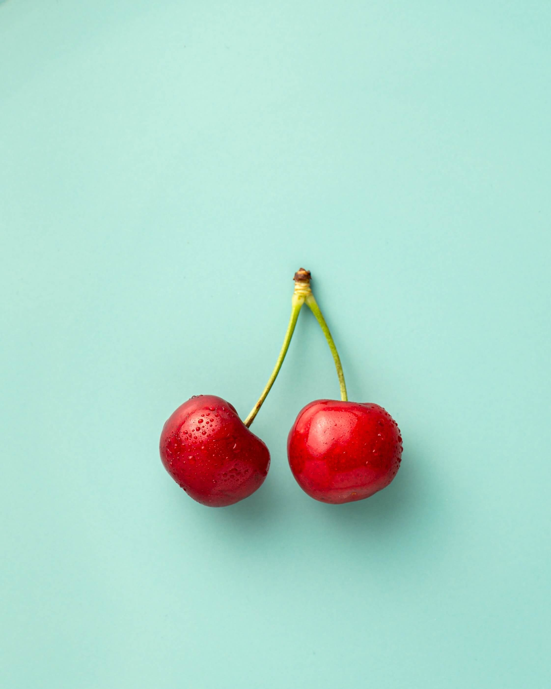
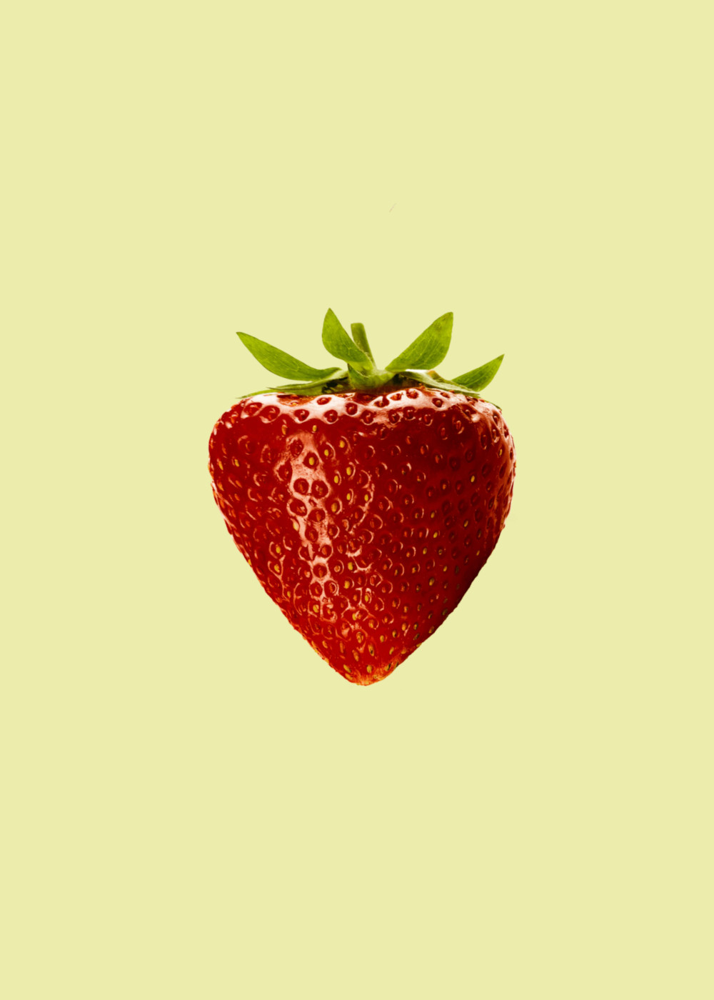
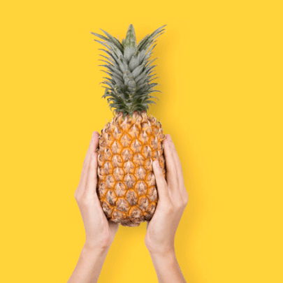
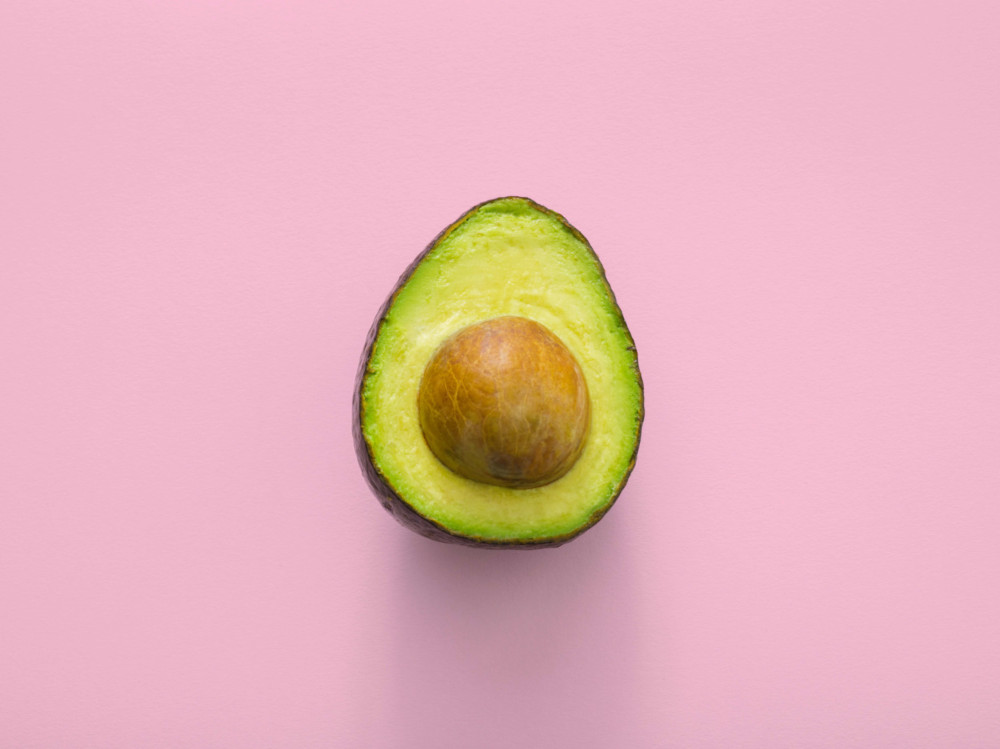

Raw fruit
Raw fruits are those which are not ripe properly. But it also contains many different nutrition. The raw food diet encourages people to eat only raw (never heated), unprocessed foods. While eating more produce is advantageous, experts say there’s no reason to avoid cooking it.


Fruit Diet
The fruitarian, or fruit, diet is a highly restrictive vegan diet. It excludes all animal products, including dairy. People following this program eat a diet consisting primarily of raw fruits. Vegetables, dried fruits, nuts, and seeds can also be eaten in moderation.

